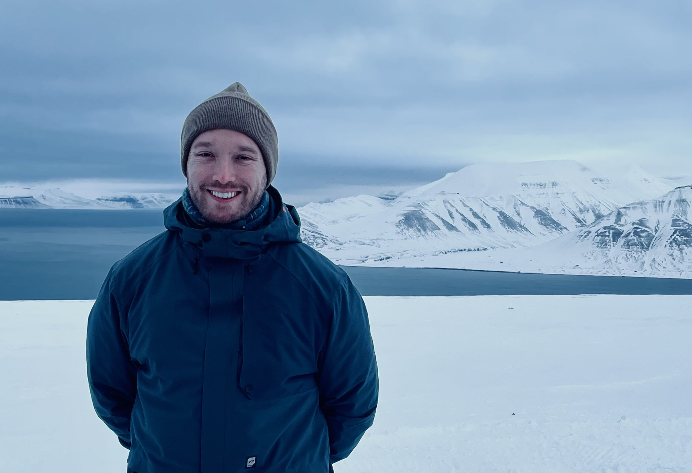

About
email: william@wilashfie.com
GitHub |
CV
 orcid.org/0000-0002-6368-939X
orcid.org/0000-0002-6368-939X
 @wilashfie
@wilashfie
Palo Alto, CA
Solar physicist.
Currently a postdoc at the BAER Institute working at the Lockheed Martin Solar and Astrophysics Lab.
Member of the IRIS science team.
Previously studying at Reed College and Montana State University.